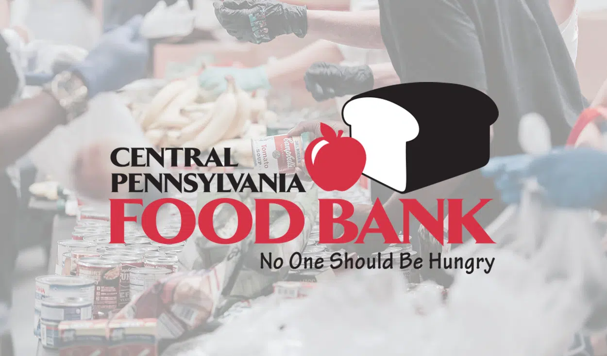
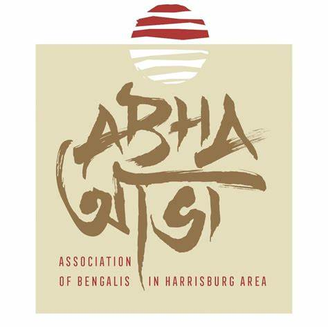

Over a decade of dedicated fundraising for hunger relief, K-8 STEM mentorship, and official Bengali community patronage.

For over ten consecutive years, Aklavya has been passionately involved in fundraising for the Central Pennsylvania Food Bank. This vital organization works to alleviate hunger, providing meals to more than 253,000 people monthly across Central Pennsylvania.
His long-term engagement reflects a deep commitment to sustainable social impact, organizing local community drives and mobilizing peers to strengthen regional hunger relief infrastructure.
Visit Central PA Food Bank
As Junior Patron and Cultural Ambassador for ABHA (abhaweb.org), Aklavya plays an active role in organizing and co-hosting annual cultural events that celebrate Bengali heritage, music, dance, and cuisine.
Created and built the official web portal for the organization. Drives annual fundraising initiatives that raise over $300 each year for cultural programs and local charitable initiatives.
Visit Official ABHA Site (abhaweb.org)Manages budgets, dues, and fundraising for STEMsters, a K-8 outreach club promoting hands-on STEM learning. Mentors younger students in science and engineering projects.
Coached summer robotics camps for 40+ Cumberland Valley middle and high school students, teaching mechanics, coding logic, and competition strategy.